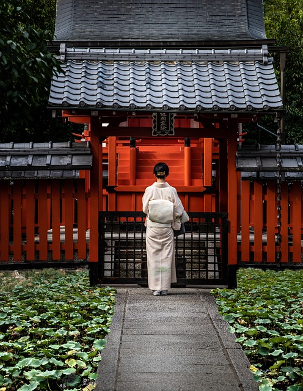
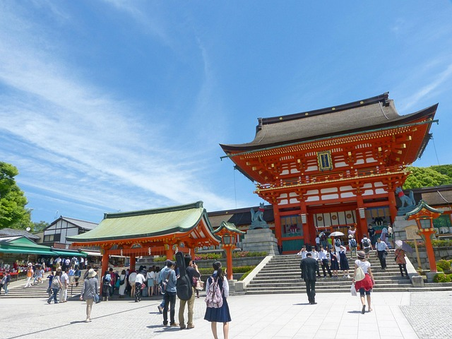
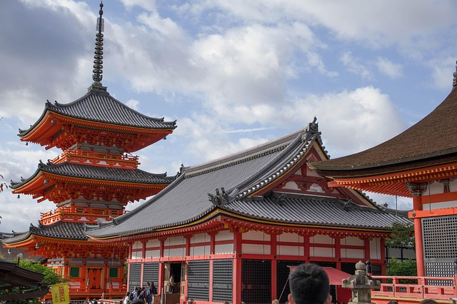
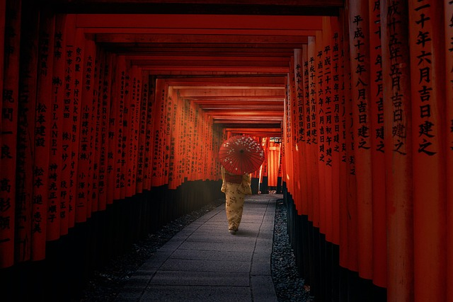
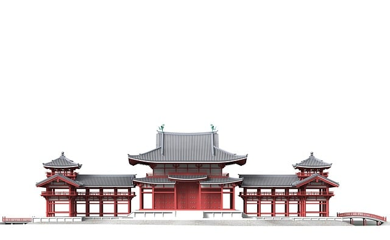
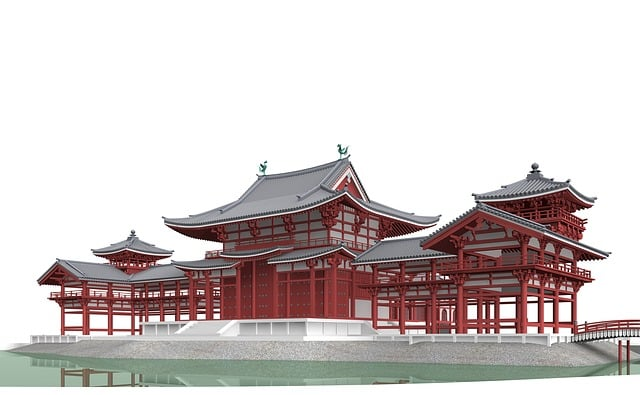
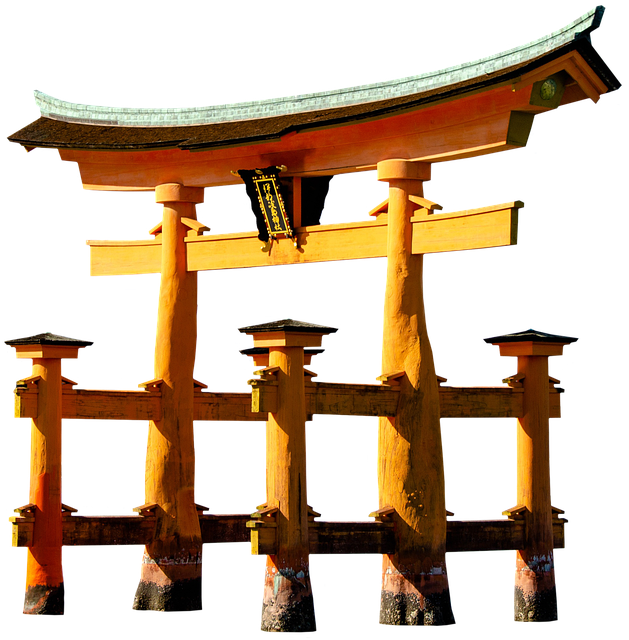
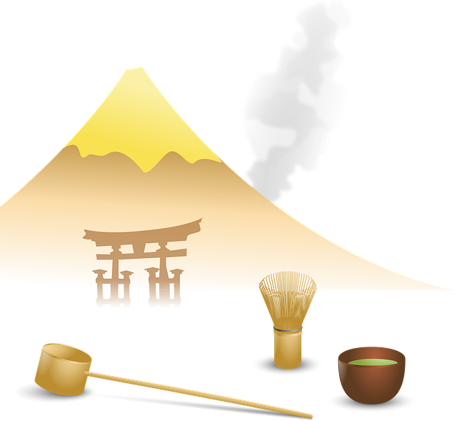

Shinto ist die indigene Religion Japans, die sich auf Verehrung von
Kami, göttlichen oder spirituellen Erscheinungen in Natur, Ahnen und
Orten konzentriert. Die Gläubigen glauben, dass Kami in natürlichen
Orten wie Bergen, Bäumen, Wasserfällen und auch an bestimmten Orten
gegenwärtig sind und das Gleichgewicht der Welt beeinflussen. Rituale
und Feste dienen dazu, Harmonie zwischen Menschen, Kami und der Umwelt
herzustellen. Oft erfolgt dies durch Reinigung, Opfergaben und Musik
oder Tanz.
Tempel (Jinja) und Schreine sind Orte der Verehrung, an denen Besucher durch Anbeter- und Reinigungsriten, Gebete und Hingabe mit der spirituellen Welt in Kontakt treten. Die Architektur spiegelt die Verbindung zu Natur und Reinheit wider. So gibt es torartige Torii, einfache, klare Linien, natürliche Materialien wie Holz und Stein, und oft großzügige, ruhige Innenhöfe. Typische Merkmale sind Taihei- oder Karamon-Dächer, kleine Halbdächer, lebendige Gärten und die Praxis des rituellen Waschens (Misogi) vor dem Beten.
Die Tempelgestaltung lädt dazu ein, Stille, Respekt und Dankbarkeit zu empfinden, wodurch Shinto eine lebendige, alltagstaugliche Spiritualität bleibt.
Tempel (Jinja) und Schreine sind Orte der Verehrung, an denen Besucher durch Anbeter- und Reinigungsriten, Gebete und Hingabe mit der spirituellen Welt in Kontakt treten. Die Architektur spiegelt die Verbindung zu Natur und Reinheit wider. So gibt es torartige Torii, einfache, klare Linien, natürliche Materialien wie Holz und Stein, und oft großzügige, ruhige Innenhöfe. Typische Merkmale sind Taihei- oder Karamon-Dächer, kleine Halbdächer, lebendige Gärten und die Praxis des rituellen Waschens (Misogi) vor dem Beten.
Die Tempelgestaltung lädt dazu ein, Stille, Respekt und Dankbarkeit zu empfinden, wodurch Shinto eine lebendige, alltagstaugliche Spiritualität bleibt.

Der Buddhismus kam im 6. oder 7. Jahrhundert aus Südasien und China nach
Japan, zunächst über Korea. Er wurde von Kaisern, Adligen und Gelehrten
aufgenommen, die ihn als spirituelle Lehre sowie als kulturelle
Bereicherung schätzten. Zunächst beeinflussten chinesische und
koreanische Formen den Buddhismus, darunter die Schulen des Mahayana und
Chan / Zen entwickelte sich später. In der Nara-Periode (8. Jahrh.)
wurde der Buddhismus staatlich gefördert und mit großen Tempelkomplexen
in Heijo-Kyo verankert.
Im späteren Kyoto-Bereich entwickelte sich der Zen-Buddhismus stark, weitere Schulen wie Tendai und Pure verbreiteten sich und prägten den religiösen Alltag.
Laut aktuellen Erhebungen geben viele Japaner an, keiner organisierten Religion anzugehören (ca. 60 – 70%), während Shinto (ca. 3 – 20%) und Buddhismus (ca. 30 – 40%) als kulturell bedeutsam gelten. In Umfragen identifizieren sich oft sowohl Shinto als auch Buddhismus als familiäre oder rituelle Traditionen, ohne einen Mitgliedschaftsstatus in einer institutionellen Religion zwingend zu bekennen.
Im späteren Kyoto-Bereich entwickelte sich der Zen-Buddhismus stark, weitere Schulen wie Tendai und Pure verbreiteten sich und prägten den religiösen Alltag.
Laut aktuellen Erhebungen geben viele Japaner an, keiner organisierten Religion anzugehören (ca. 60 – 70%), während Shinto (ca. 3 – 20%) und Buddhismus (ca. 30 – 40%) als kulturell bedeutsam gelten. In Umfragen identifizieren sich oft sowohl Shinto als auch Buddhismus als familiäre oder rituelle Traditionen, ohne einen Mitgliedschaftsstatus in einer institutionellen Religion zwingend zu bekennen.



Shinto ist eine naturnah-spirituelle Tradition Japans, die sich auf Kami
(Gottheiten der Natur und Ahnen) und Rituale im Alltag konzentriert; es
gibt keine zentrale Glaubenslehre oder Gründungsgeschichte wie im
Buddhismus. Buddhismus ist eine lehrbasierte religiöse Tradition mit
Ursprung in Indien; er betont Lehren über Leid, Karma und Erleuchtung,
verschiedene Schulen (Mahayana, Theravada, Zen) und meditative
Praxis.
In Japan werden beide oft gleichzeitig praktiziert. Menschen besuchen Shinto-Schreine für Zeremonien und Buddhismus-Schulen für Rituale wie Bestattungen. Die beiden Religionen ergänzen sich kulturell. Ihre Hauptunterschiede sind der Ursprung und die Lehre (Kami vs. karmische Lehre), Ziel (ritueller/praxisorientierter Alltag vs. Erleuchtung und Befreiung) als auch die Organisationsform (familiäre Rituale und Shinto-Schreine vs. buddhistische Tempel und Orden).
In Japan werden beide oft gleichzeitig praktiziert. Menschen besuchen Shinto-Schreine für Zeremonien und Buddhismus-Schulen für Rituale wie Bestattungen. Die beiden Religionen ergänzen sich kulturell. Ihre Hauptunterschiede sind der Ursprung und die Lehre (Kami vs. karmische Lehre), Ziel (ritueller/praxisorientierter Alltag vs. Erleuchtung und Befreiung) als auch die Organisationsform (familiäre Rituale und Shinto-Schreine vs. buddhistische Tempel und Orden).